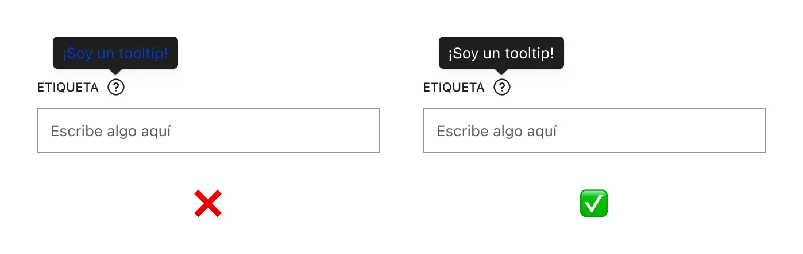
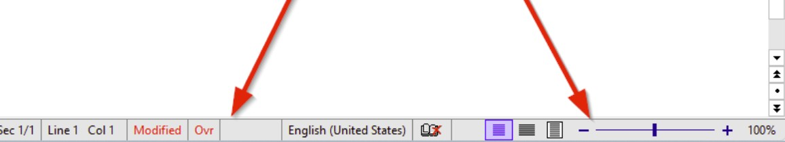
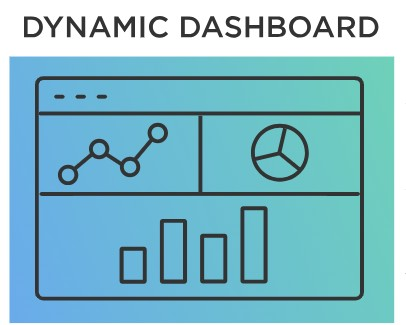
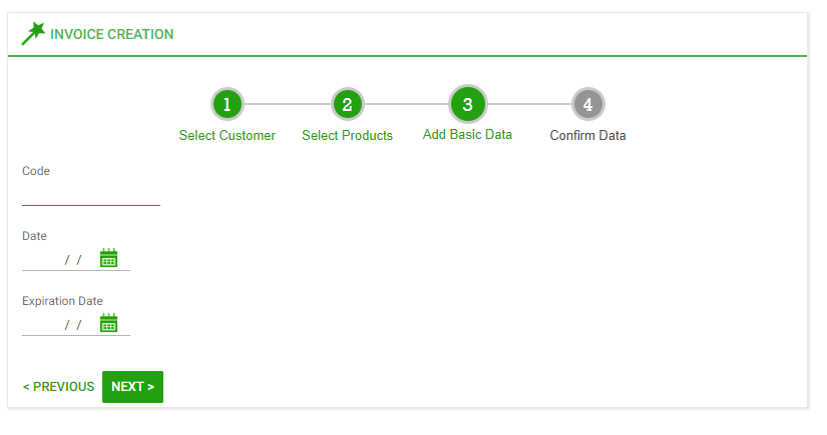
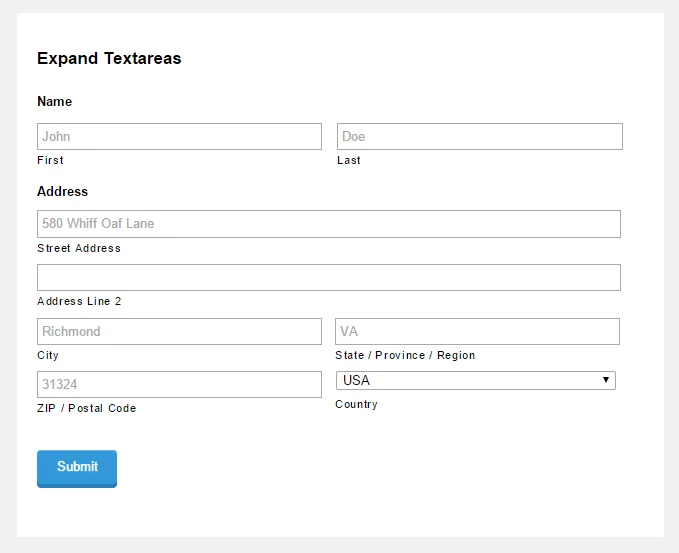
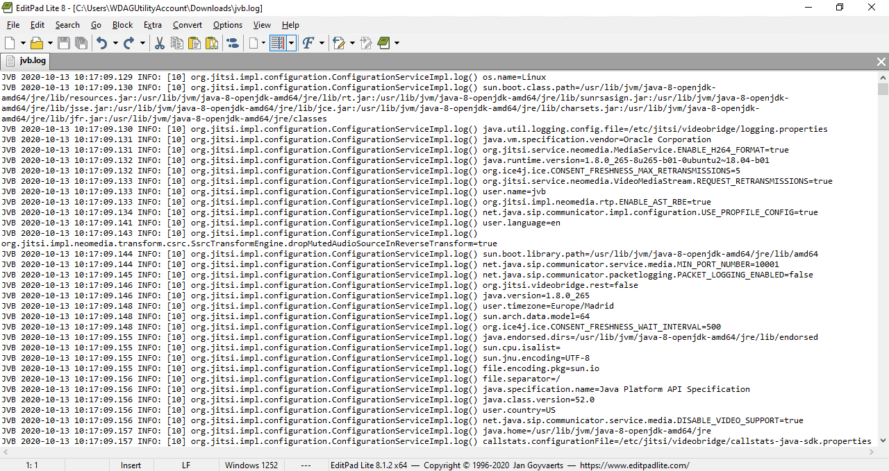

Introducción
La documentación técnica y de usuario es un componente esencial en el desarrollo de interfaces. No solo facilita el uso correcto de una aplicación, sino que también mejora su mantenibilidad y escalabilidad. Esta unidad aborda tres pilares fundamentales:
- Generación de ayudas contextuales
- Manual de usuario
- Documentación técnica del proyecto
1. Generación de ayudas contextuales
La ayuda contextual ofrece información útil y breve directamente relacionada con la acción que el usuario está ejecutando, sin interrumpir su flujo de trabajo.
1.1 Sistemas de ayuda integrados
- Tooltips: Mensajes breves que aparecen al pasar el cursor sobre un elemento. Ejemplo: Guardar cambios al situar el ratón sobre el icono de guardar.
- Barras de estado: Muestran información contextual en la parte inferior de la ventana.
- Paneles dinámicos: Actualizan su contenido según el elemento seleccionado.
- Mensajes emergentes: Alertas sobre acciones importantes o riesgos.
- Asistentes (Wizards): Guías paso a paso para procesos complejos.
- Ayuda F1 contextual: Abre documentación específica del control activo.
- Áreas explicativas: Texto fijo dentro del formulario que explica el uso del componente.





1.2 Formatos comunes de ayuda
Los sistemas de ayuda pueden presentarse en diferentes formatos según la plataforma, el tipo de aplicación y el perfil del usuario. Cada formato tiene ventajas y limitaciones que conviene conocer para elegir el más adecuado.
-
HTML/HTML5:
Ideal para aplicaciones web o manuales interactivos. Permite navegación mediante enlaces, integración de imágenes, vídeos y estilos CSS.
Ejemplo: Una página de ayuda con buscador y enlaces internos:<div class="help"> <h2>¿Cómo crear un proyecto?</h2> <p>Haz clic en <a href="#nuevo">Nuevo proyecto</a> en la barra de herramientas.</p> </div> -
CHM (Compiled HTML Help):
Formato clásico en Windows que compila varias páginas HTML en un archivo único con índice, buscador y enlaces cruzados.
Ejemplo: Manual de instalación accesible desde el menú “Ayuda” de una aplicación de escritorio.
-
PDF:
Perfecto para manuales completos y documentación imprimible. No es interactivo, pero permite incluir imágenes, tablas y enlaces.
Ejemplo: Un manual de usuario descargable con secciones como “Instalación”, “Configuración” y “Preguntas frecuentes”. -
Markdown (.md):
Muy usado en entornos de desarrollo y repositorios (GitHub, GitLab). Sintaxis sencilla que se convierte fácilmente en HTML.

-
TXT:
Formato básico para instrucciones rápidas, especialmente en aplicaciones de consola o scripts.

-
EPUB:
Orientado a dispositivos móviles y lectores electrónicos. Permite navegación y ajuste de texto.
Ejemplo: Manual interactivo para una app móvil, con capítulos y enlaces internos.
Consejo: Elige el formato según el contexto: HTML para aplicaciones web, CHM para escritorio, PDF para documentación formal, Markdown para desarrolladores, TXT para instrucciones rápidas y EPUB para movilidad.
2. Manual de usuario
Documento esencial que guía al usuario final en el uso correcto del sistema.
2.1 Contenido mínimo y estructura
- Portada: Nombre del producto, versión, autor.
- Índice general: Listado de contenidos.
- Introducción: Finalidad del software y público objetivo.
- Requisitos del sistema: Hardware y software necesarios.
- Instalación: Pasos detallados con capturas.
- Interfaz general: Descripción de menús y botones.
- Funcionalidades principales: Operaciones más importantes.
- Procedimientos operativos: Ejemplo: crear proyecto, guardar archivo.
- FAQ: Preguntas frecuentes.
- Soporte y contacto: Datos de asistencia técnica.
- Apéndices: Glosario, notas legales.
2.2 Guía paso a paso y ejemplos
Ejemplo: Crear un nuevo proyecto
- Inicia la aplicación.
- Haz clic en “Nuevo proyecto”.
- Introduce el nombre del proyecto.
- Selecciona el tipo de interfaz.
- Configura parámetros iniciales.
- Pulsa “Aceptar”.
3. Documentación técnica del proyecto
Garantiza que la aplicación pueda ser instalada, configurada y mantenida eficientemente.
3.1 Manual de instalación y configuración
- Introducción: Objetivos del manual.
- Requisitos previos: SO, dependencias.
- Fuentes del software: Descarga y verificación.
- Pasos de instalación: Asistida, manual, en red.
- Configuración inicial: Idioma, rutas.
- Configuración avanzada: BD, roles, APIs.
- Errores frecuentes: Soluciones.
- Pruebas iniciales: Verificación.
- Actualización y desinstalación: Procedimientos.
3.2 Estructura de la información persistente
- Modelo lógico: Diagramas ER.
- Modelo físico: Tablas, índices.
- Tecnologías: Motores y formatos.
- Seguridad: Permisos, cifrado.
- Configuración persistente: Archivos externos, claves API.